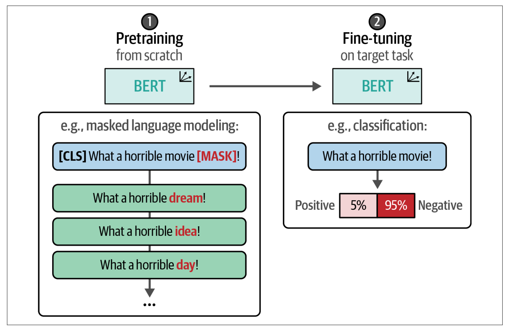

微调表示型大模型#
对于非生成类任务，表示型模型常常表现优异。如果我们拥有足够的数据，微调往往能够产生一些性能表现最优的模型。本节，我们将讨论几种微调 BERT 模型的方法和应用：
有监督分类。展示了微调分类模型的一般流程。
少样本分类。介绍 SetFit，这是一种利用少量训练样本高效微调高性能模型的方法。
使用掩码语言模型的持续预训练。将探讨如何继续训练预训练模型。
命名实体识别。探讨在 token 级别上进行分类的方式。
有监督分类#
在之前，我们通过利用预训练的表示模型探索了有监督分类任务。这些模型要么被训练用于预测情感（任务特定模型），要么用于生成嵌入。为了展示利用预训练模型进行分类任务的潜力，我们保持这两种模型都被冻结（不可训练）。嵌入模型使用一个单独的可训练分类头（分类器）来预测影评的情感。
在本节中，我们将采取类似的方法，但允许在训练过程中同时更新模型和分类头。我们不再使用嵌入模型，而是对一个预训练的 BERT 模型进行微调，以创建任务特定模型。与嵌入模型方法相比，我们将把表示模型和分类头作为一个整体架构进行微调。与“冻结”架构相比，我们改为同时训练BERT 模型和分类头。反向传播将从分类头开始，并传递到 BERT 模型。
为此，我们不再冻结模型，而是允许其可训练，并在训练过程中更新其参数。如下图所示，我们将使用一个预训练的 BERT 模型，并添加一个神经网络作为分类头，这两部分都将针对分类任务进行微调。
在实际操作中，这意味着预训练的 BERT 模型和分类头会被联合更新。它们不再是独立的流程，而是相互学习，从而能够产生更准确的表示。
少样本分类#
少样本分类是有监督分类中的一种技术，它让分类器仅基于少量带标签的示例来学习目标标签。当你有一个分类任务但没有大量可用的标注数据时，这种技术非常有用。换句话说，该方法允许你为每个类别标注少数几个高质量的数据点，并在这些数据上训练模型。
SetFit：使用少量训练示例进行高效微调#
为了执行少样本文本分类，我们使用 SetFit 高效框架。它构建于 sentence-transformers 架构之上，用于生成在训练过程中会被更新的高质量文本表示。该框架仅需少量带标签示例，就能够在性能上与在大规模标注数据集上微调类似 BERT 的模型相媲美。
SetFit 的底层算法包括三个步骤：
采样训练数据 基于同类（正样本）和异类（负样本）的标注数据选择，生成句子对——正样本（相似句对）和负样本（不相似句对）。
微调嵌入 基于之前生成的训练数据对预训练嵌入模型进行微调。
训练分类器 在嵌入模型之上创建分类头，并使用之前生成的训练数据进行训练。
在微调嵌入模型之前，我们需要生成训练数据。该模型假设训练数据是正样本（相似句对）和负样本（不相似句对）的集合。然而，当我们处理分类任务时，输入数据通常并未被标注为这种形式。
例如，假设我们有下图的训练数据集，将文本分为两类：关于编程语言的文本和关于宠物的文本。
在第 1 步中，SetFit 通过同类（in-class）和异类（out-class）的选择来生成所需的数据。例如，当我们有 16 条关于运动的句子时，我们可以创建 16 × (16 – 1) / 2 = 120 对句子对，并将它们标记为正样本对。通过从不同类别中收集句子对，我们可以生成负样本对。
在第 2 步中，我们可以使用生成的句子对来微调嵌入模型。这利用了一种称为对比学习的方法，对预训练的 BERT 模型进行微调。对比学习允许从相似（正样本）和不相似（负样本）句子对中学习到准确的句子嵌入。由于我们在上一步生成了这些句子对，因此可以使用它们来微调 Sentence Transformers 模型。
微调该嵌入模型的目标是使其能够生成针对分类任务调优的嵌入。通过对嵌入模型的微调，类别之间的相关性及其相对含义被提炼并体现在这些嵌入中。
在第 3 步中，我们为所有句子生成嵌入，并将这些嵌入作为分类器的输入。我们可以使用微调后的 SentenceTransformers 模型将句子转换为可用作特征的嵌入。分类器从这些微调后的嵌入中学习，以便准确地预测未见过的句子。分类器可以是任何 scikit-learn 模型或一个分类头。
当我们将所有步骤结合起来时，就得到了一个高效且优雅的分类流水线，适用于每个类别只有少量标签的场景。它巧妙地利用了我们拥有标注数据的这一优势，尽管这种标注方式并非我们理想中的形式。展示了整个流程的概览。
首先，根据类内（in-class）和类外（out-class）选择生成句子对。其次，使用这些句子对对预训练的 SentenceTransformer 模型进行微调。最后，使用微调后的模型对句子进行嵌入，并在这些嵌入上训练分类器来预测类别。
使用掩码语言模型的持续预训练#
在到目前为止的示例中，我们利用了一个预训练模型，并对其进行了微调以执行分类任务。这个过程描述了一个两步流程：首先是预训练模型（这一步已经为我们完成），然后针对特定任务进行微调。

这种两步方法通常在许多应用中使用。当面临特定领域的数据时，它存在一定的局限性。预训练模型通常是在非常通用的数据上训练的，比如维基百科页面，可能并未针对你的领域专用词汇进行调整。
与其采用这种两步方法，不如在它们之间插入另一个步骤，即对已预训练的 BERT 模型进行继续预训练。换句话说，我们可以继续使用掩码语言模型（MLM）训练 BERT 模型，但改用我们领域的数据。这就像是从通用 BERT 模型转向专门针对医学领域的 BioBERT 模型，再到微调后的 BioBERT 模型用于分类药物。
这将更新子词表示，使其更适应之前可能未见过的词汇，该过程如下图所示，并展示了这一步如何更新掩码语言建模任务。研究表明，在已预训练的 BERT 模型上继续进行预训练可以提升模型在分类任务中的性能，是对微调流程的有益补充。
我们无需从头开始预训练整个模型，而只需在对其进行分类微调之前继续预训练。这也有助于模型适应特定领域，甚至某个组织的行话。公司可能采用的模型谱系，请见下图说明说明。